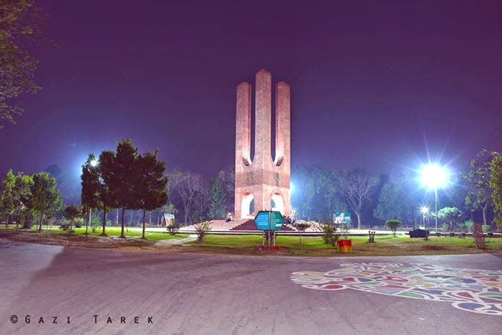

Jahangirnagar University (abbreviated as JU) is a public research university located in Savar, Dhaka, Bangladesh.It is the only fully residential university of Bangladesh. The university was established in 1970 by the Jahangirnagar Muslim University Ordinance of the government of Pakistan. Its first vice-chancellor, Mafizuddin Ahmed (PhD in chemistry, Penn State) took up office on 24 September 1970. The first group of students, a total of 150, were enrolled in four departments: Economics, Geography, Mathematics, and Statistics. Its formal inauguration was delayed until 12 January 1971, when the university was launched by Rear Admiral S. M. Ahsan, the chancellor.
 About JU